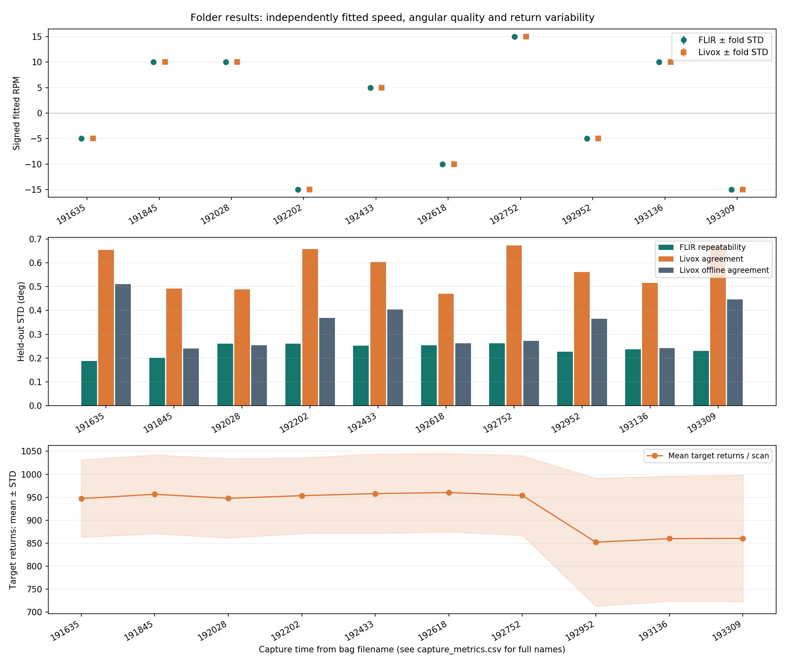
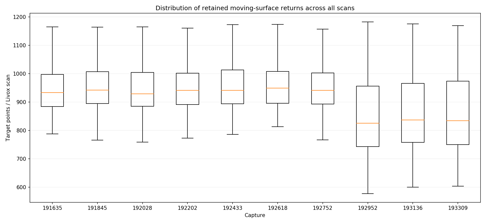
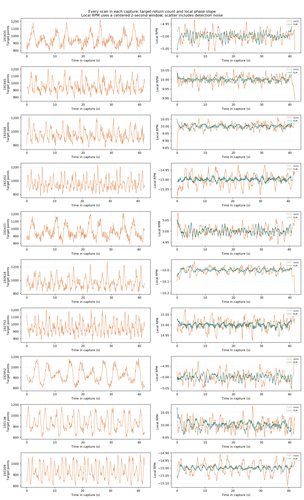
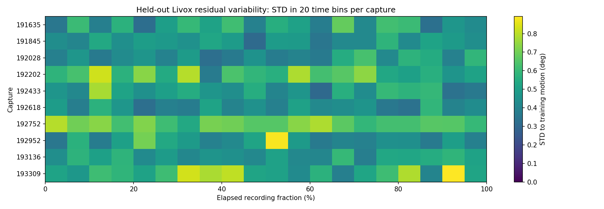
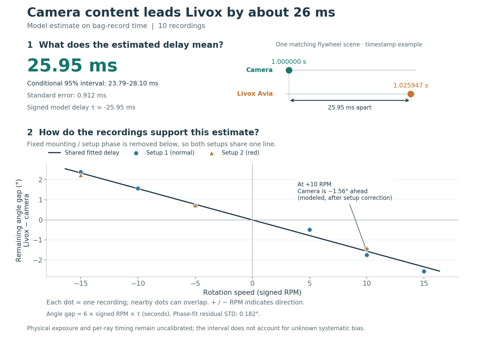

# Device folder processing report Folder: `bagfiles/device_1/`. Batch run: `batch_device_1_20261007T064645Z_f2b206cc`. Requested bags: 10. Completed: 10. Failed: 0. Camera frames: 14,281. Livox scans: 4,205. Input LiDAR points decoded: 100,920,000. ## Per-capture results | Bag | Scans | FLIR RPM | Livox RPM | Livox local RPM STD | FLIR STD (deg) | Livox agreement STD (deg) | Offline agreement STD (deg) | Target returns mean ± STD | |---|---:|---:|---:|---:|---:|---:|---:|---:| | `rig_20260828_191635_0.bag` | 419 | -4.99977 | -4.99999 | 0.02212 | 0.1876 | 0.6546 | 0.5105 | 947.2 ± 84.2 | | `rig_20260828_191845_0.bag` | 419 | +9.99967 | +10.00019 | 0.02258 | 0.2013 | 0.4916 | 0.2396 | 956.5 ± 85.8 | | `rig_20260828_192028_0.bag` | 419 | +9.99985 | +10.00060 | 0.02290 | 0.2608 | 0.4887 | 0.2537 | 947.7 ± 86.5 | | `rig_20260828_192202_0.bag` | 425 | -14.99923 | -14.99922 | 0.03279 | 0.2596 | 0.6578 | 0.3685 | 953.5 ± 82.2 | | `rig_20260828_192433_0.bag` | 421 | +4.99977 | +5.00018 | 0.02171 | 0.2515 | 0.6036 | 0.4039 | 958.0 ± 86.5 | | `rig_20260828_192618_0.bag` | 419 | -9.99947 | -10.00049 | 0.03061 | 0.2539 | 0.4699 | 0.2623 | 960.3 ± 85.7 | | `rig_20260828_192752_0.bag` | 420 | +14.99944 | +14.99958 | 0.02702 | 0.2628 | 0.6740 | 0.2723 | 953.8 ± 86.6 | | `rig_20260828_192952_0.bag` | 420 | -4.99983 | -5.00011 | 0.02406 | 0.2267 | 0.5623 | 0.3651 | 852.2 ± 139.2 | | `rig_20260828_193136_0.bag` | 420 | +9.99988 | +9.99973 | 0.02169 | 0.2363 | 0.5164 | 0.2411 | 859.9 ± 136.3 | | `rig_20260828_193309_0.bag` | 423 | -14.99928 | -14.99995 | 0.03756 | 0.2303 | 0.6742 | 0.4458 | 860.5 ± 137.5 | ## Overall timestamp analysis Status: **PHASE_MODEL_CANDIDATE**. Cross-speed separation assumes a stable empirical harmonic phase and fixed sensor phase within each setup. Pose, localization, calibration and scan-phase changes can bias this candidate. Candidate: **-25.95 ms**. Student-t 95% interval: [-28.10, -23.79] ms. Standard error: 0.91 ms. Phase-fit residual STD: 0.1817 deg. Residual degrees of freedom: 7. theta_livox(t_bag) = phase + theta_flir(t_bag + tau); positive tau means Livox content leads FLIR on bag time. This is **not a calibrated physical sensor offset**. The interval is conditional on a stable empirical phase convention and fixed sensor pose within each acquisition group; it excludes systematic scan, geometry and exposure effects. Per-bag conditional lag minima are not averaged. Every scan contributes to its own bag detection, while each distinct bag is one timing replicate. Quality-review captures are excluded from the overall fit. Insufficient bags or signed-speed variation produce an unresolved result. ## Scan variability and reproducibility Every recorded cloud is decoded. Motion estimation uses measured target-region returns; full raw clouds remain in the selected source bag. `all_scan_metrics.csv` contains every scan's input/target counts, target depth mean/spread, centroid, harmonic magnitude, relative angles, held-out residual, boundary flag and local RPM. `all_camera_local_rpm.csv` contains local camera slopes; combined per-sensor angle CSVs are also saved. Local RPM is an offline centered 2-second phase slope and uses up to one second of future data. RPM scatter includes angle-estimation noise and periodic-model effects. It is not an independent measurement of mechanical speed variation. Fold RPM STD describes sensitivity to held-out data. Spatial depth spread is not angular error. FLIR and Livox independently infer their own speed without supplied motor RPM. Each capture's complete intermediate arrays, model files, angle CSVs, nine figures and individual reports are in `captures/<capture run>/`. `capture_metrics.csv` summarizes each bag. `variability_bins.csv` contains the plotted within-capture bins. `timing/` saves the overall fit observations, residuals and parameter covariance. `processing_manifest.csv` includes failures and exact source paths; successful results remain available when another bag fails. A downloaded batch ZIP includes all nested capture artifacts. ## Processing issues None.




